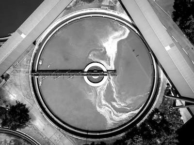
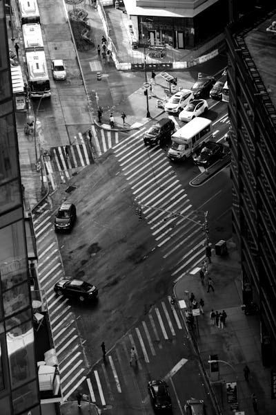
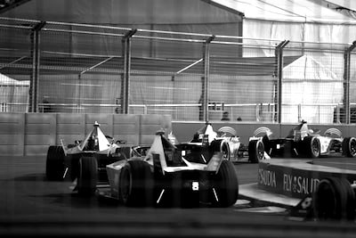
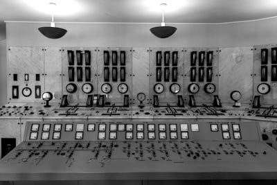
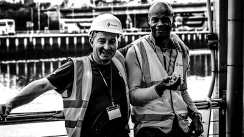
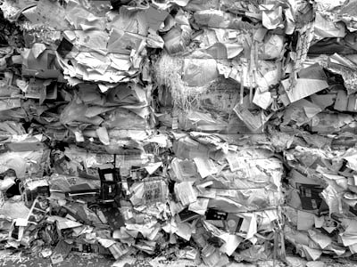

FDE COHORT1
We're making critical infrastructure intelligent.
But we need people on the ground to deliver it.
Cities and utilities across the US want to use AI well.
And engineers want to see their work create a positive legacy.
Sand has built this legacy in systems across 18 countries already.
Now we're bringing it to the US.
SAND FDE COHORT1 is your opportunity to come and experience our work environment, put your skills to the test and deploy AI where it matters most.
Apply to join Sand FDE Cohort1

What we’re building with Sand FDE Cohort1
Impact. The systems people rely on every day, from water networks to city services, deserve AI that works.
Growth. Sand FDE Cohort1 brings together engineers who build and run Physical AI inside critical infrastructure.
Team. Engineers join as a cohort and start their first deployments together.
Come Together
Get Critical
Build Impact
Become an FDE. Build what matters.
Apply, spend a weekend inside Sand, and graduate into the role.
-
01
Apply
Applications are open to engineers based in the US. Candidates are selected based on their technical experience, their work with clients, and their interest in critical infrastructure.
-
02 / NOV 6 TO 8
Immerse
Shortlisted candidates are invited to an expenses paid weekend with Sand in New York. It's two days inside our work: a real problem, a small team, without AI on the first day and with AI on the second. Candidates meet the people they'd work with and see how Sand runs from the inside.
-
03
Graduate
The weekend is the final stage of hiring. Everyone hears back afterwards, and candidates who graduate are offered the position they applied for. They start together as Sand FDE Cohort1.
What we work on
Forward deployed engineers work alongside cities, utilities and public agencies across the US, building the systems behind the services people use every day.
- 01WasteUS

- 02EnergyUS
- 03AirportsUS
- 04HealthUS
- 05WaterGlobal
- 06TelecomGlobal
- 07CitiesGlobal
- 08Formula EGlobal
FAQ
What is Sand FDE Cohort1?
Sand FDE Cohort1 is how Sand is hiring its first forward deployed engineers in the US. These are full time roles at Sand. Engineers who join work on real client projects across waste, energy, airports and health.
Why a weekend?
This role needs more than an interview. The weekend lets candidates show how they work with a team on a real problem, and gives them a clear picture of Sand before they decide.
Is everyone who attends the weekend hired?
No. The weekend is the final stage of hiring, and some candidates will graduate into the role they applied for. Everyone leaves knowing Sand properly, whatever the outcome.